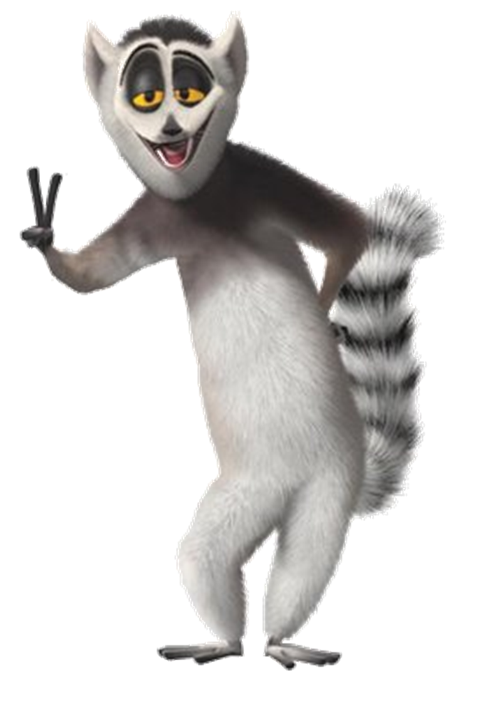

Lists are used to store multiple items in a single variable.
Lists are one of 4 built-in data types in Python used to store collections of data, the other 3 are Tuple, Set, and Dictionary, all with different qualities and usage.
Lists are created using square brackets:
Create a List:
thislist = ["apple", "banana", "cherry"]
print(thislist)
List items are ordered, changeable, and allow duplicate values.
List items are indexed, the first item has index [0], the second item has index [1] etc.
When we say that lists are ordered, it means that the items have a defined order, and that order will not change.
If you add new items to a list, the new items will be placed at the end of the list.
Note: There are some list methods that will change the order, but in general: the order of the items will not change.
The list is changeable, meaning that we can change, add, and remove items in a list after it has been created.
Since lists are indexed, lists can have items with the same value:
Lists allow duplicate values:
thislist = ["apple", "banana", "cherry", "apple", "cherry"]
print(thislist)
To determine how many items a list has, use the len() function:
Print the number of items in the list:
thislist = ["apple", "banana", "cherry"]
print(len(thislist))
List items can be of any data type:
String, int and boolean data types:
list1 = ["apple", "banana", "cherry"]
list2 =
[1, 5, 7, 9, 3]
list3 = [True, False, False]
A list can contain different data types:
A list with strings, integers and boolean values:
list1 = ["abc", 34, True, 40, "male"]
From Python's perspective, lists are defined as objects with the data type 'list':
<class 'list'>
What is the data type of a list?
mylist = ["apple", "banana", "cherry"]
print(type(mylist))
It is also possible to use the list() constructor when creating a new list.
Using the list() constructor to make a List:
thislist = list(("apple", "banana", "cherry")) # note the double round-brackets
print(thislist)